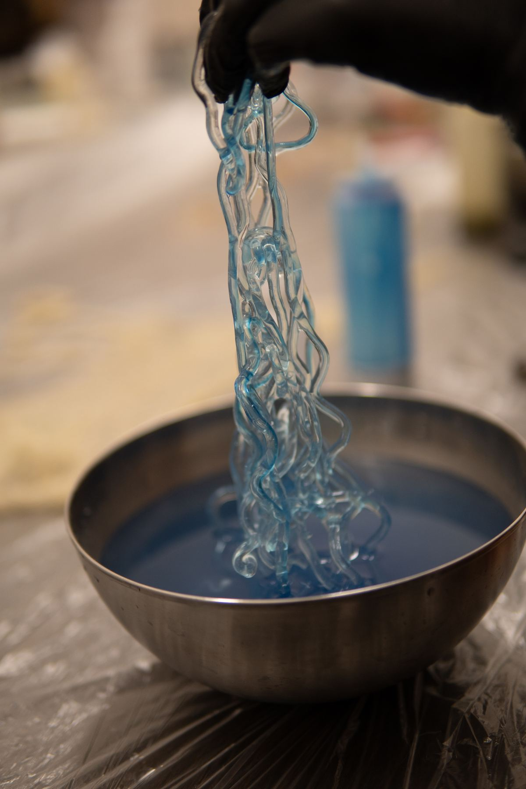
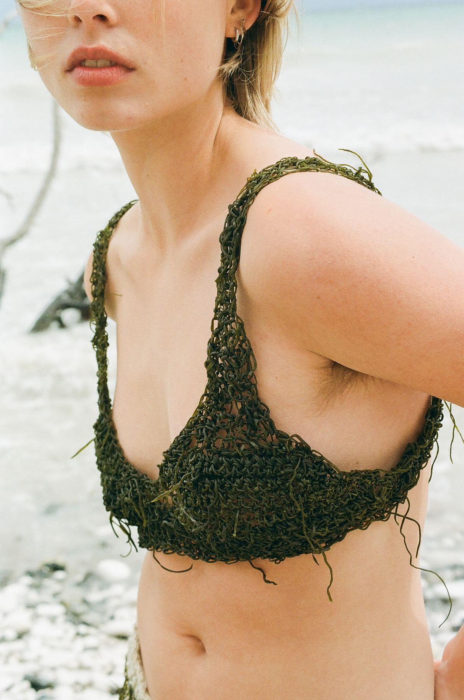
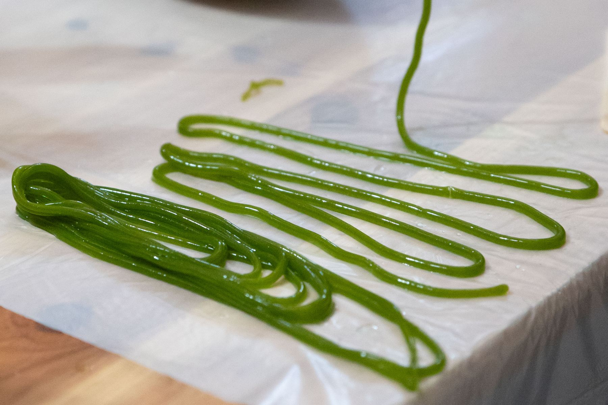

ALG-FIL-001Filaments
Pearl filament
- Material
- Sodium alginate, glycerine
- Process
- Extrusion in calcium bath
- Observed
- Pearly shine after long rest
- Status
- Ongoing
Move here
liquid → gel → matter
Independent design & research practice
00 · In the bath · real footage
Alginate meets calcium and holds its shape: a liquid that decides to become a thread.
ALG-FIL · extrusion00:00
01 · The practice

Emi BioLab is the practice of Carola Emanuela Godja, designer and researcher. A world of matter, transformation, research and possibility, grown around algae.
I work with matter, not just on it: alginate and algae-derived materials, observed as they move from liquid to gel to form.
The research is open and situated: water, salts, time and hands change the result. What I document, I share.
1 : 4Everything I do is a transformation
Where everything starts: salt, movement, time.
Living matter that grows, holds water and changes with the place.
Alginate: long chains that turn liquid into gel when they meet calcium.
Filament, membrane, surface, structure. A possibility, not a product.
02 · Selected research & projects
Investigations that became objects, textiles and collaborations. Each one starts from a question about how matter behaves.

P-01Alginate FilamentsOngoing investigationView P-02 · photo to comeMermaid BagTextile applicationView
P-02 · photo to comeMermaid BagTextile applicationView
 P-03Material SurfacesMembranes and sheetsView
P-03Material SurfacesMembranes and sheetsView

P-04Textile Structureswith HaeklView03 · Material archive
MaterialsFilamentsTextile structuresSurfaces & membranesProcessesMaterial interactionsEnvironmental observations
ALG-FIL-001Filaments

ALG-PIG-002Materials

ALG-PRO-003Processes

ALG-ENV-004Environmental
Behind every thread there are failures, measurements and long waits. The archive keeps all of it, so that others can start from there.

04 · Knowledge sharing
I share what I learn through making. Online workshops, Venice in person, lectures for universities and institutions: makers from more than 16 countries have worked with me.
Next online workshop05.12.2026→05 · Collaborations
ALG-SPH-000 · An alginate sphere: water held by its own skin.